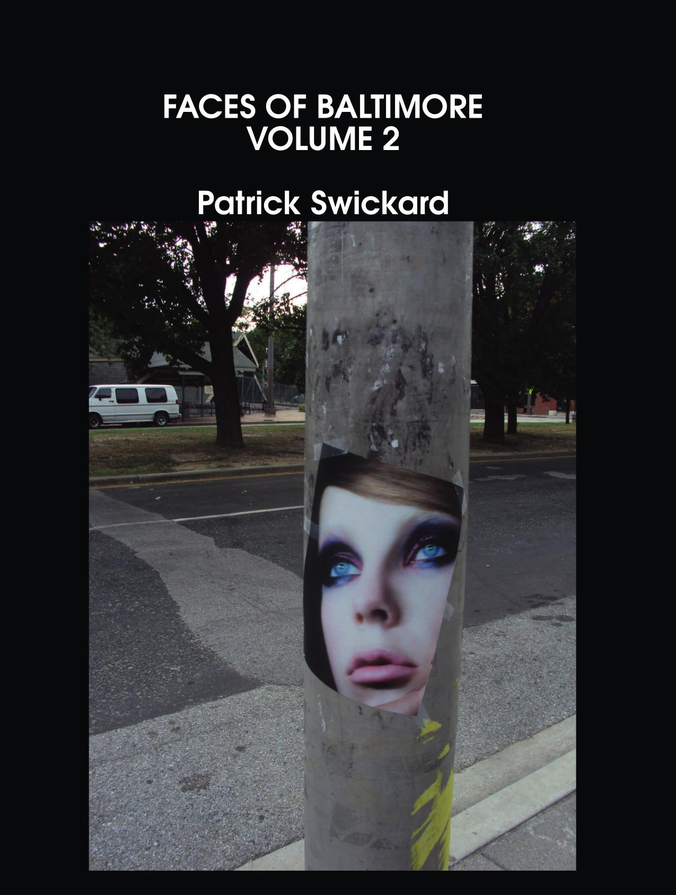
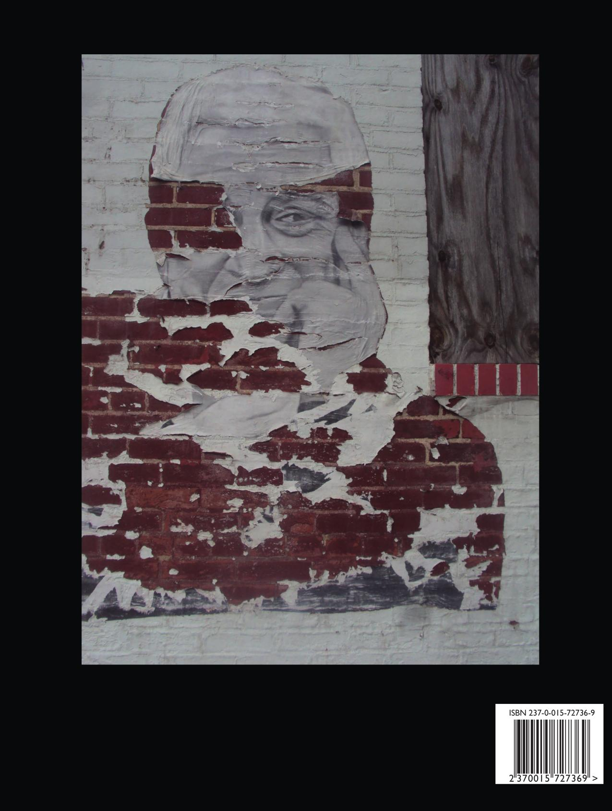

Faces of Baltimore Volume 2
Patrick Swickard
8.5"x11" paperback, 210 pages
Well, the men come in these places
And the men are all the same
You don't look at their faces
And you don't ask their names
You don't think of them as human
You don't think of them at all
You keep your mind on the money
Keeping your eyes on the wall
- Tina Turner
Graffiti on a theme. This second volume of a two volume set features full page images of faces on signs and graffiti, captured between 2013 and 2019. Great for when you want to take a break from reading for awhile.
These two volumes are honestly my favorite of the themed editions.